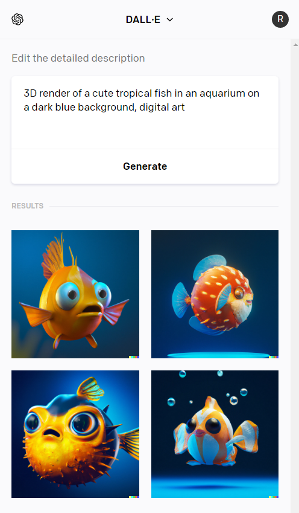
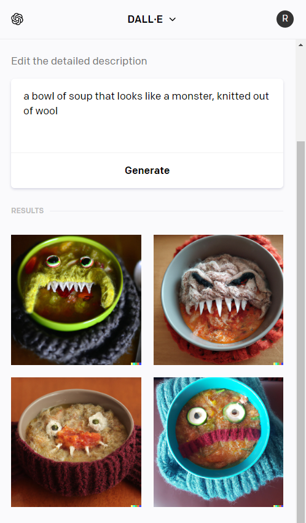
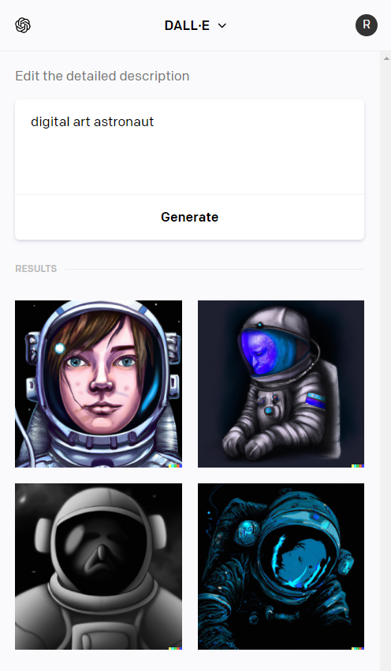

DALL-E
DALL-E (Dali + WALL-E) - це генеративна модель, яка використовується для створення зображень на основі текстового опису. Вона була розроблена компанією OpenAI і базується на архітектурі GPT (Generative Pre-trained Transformer), яка дає можливість зрозуміти зв'язки між словами та генерувати нові зображення на основі текстового вводу.
Як почати використовувати DALL-E?
Для того, щоб почати використовувати ChatGPT, вам потрібно лише зареєструватися на сайті labs.openai.com та ви отримаєте перші 15 генерацій безкоштовно.



